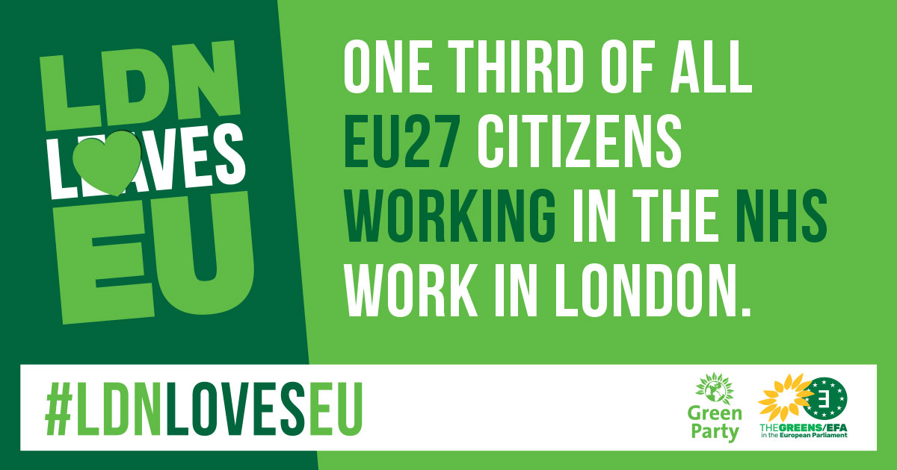
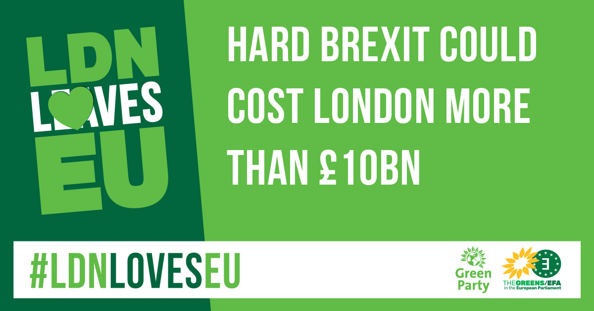
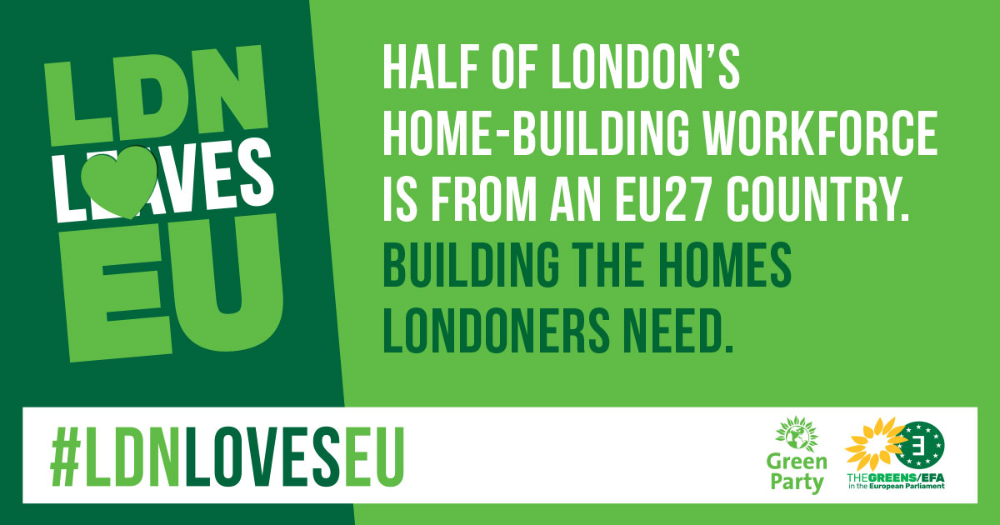
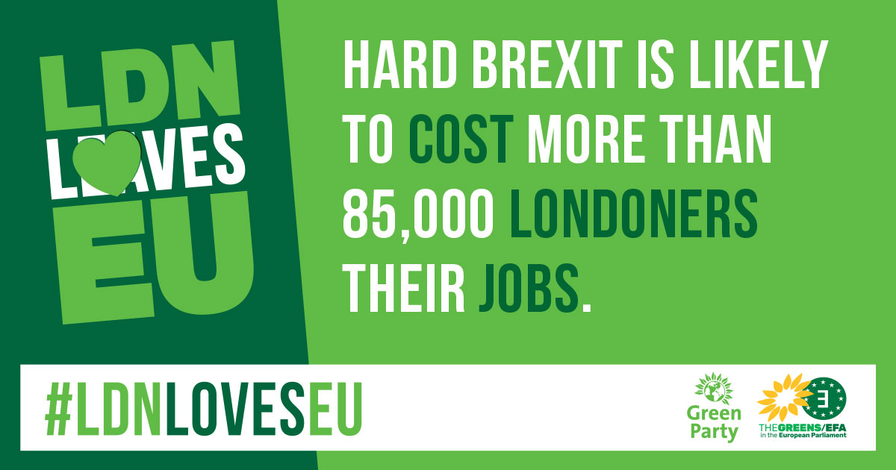

References for the statistics in the leaflet
- One third of all EU27 nationals staffing the NHS work in London
- Royal Brompton is the UK hospital most reliant on these staff, with 28% of doctors and 27% of nurses from the EU27
- Since the referendum, over 10,000 EU27 staff have quit the NHS which is heading for a recruitment crisis with 40,000 nursing vacancies
- One fifth of all small employers in the UK rely on staff from the EU27
- 1 in 7 start-up entrepreneurs in London are migrants
- 95% of small businesses have no experience of using the complex immigration system currently used to recruit non-EU workers
- 28% of workers in London's construction industry were born in the EU27
- Half of London's home-building workforce is from an EU27 country
- Without these workers the Government cannot meet its target of building 300,000 homes a year
- More than a third of workers in London's hospitality sector are EU27 nationals
- 75% of the UK's waiting staff, 37% of housekeepers and 25% of chefs are from the EU27
- Without any new EU migration or an increase in British applicants, the industry could face a shortfall of more than 60,000 jobs each year
Scott's team have produced lots of social media resources for use in the campaign, those that have statistics on are referenced below.

Source

Sources

Source

Source

Source